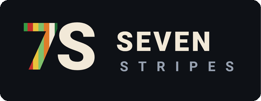
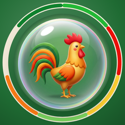

← strona studia · studio page

Bubble Stripes
Gra w kulki z prawdziwymi miejscami Polski
O grze
Celuj, strzelaj, zbijaj. Trzy kulki w jednym kolorze pękają, a wszystko, co straci oparcie o sufit, spada z hukiem. Bubble Stripes to gra w kulki osadzona w polskim krajobrazie — od łąk Łowicza po Tatry i Bałtyk.
- Prawdziwe miejsca: ponad sto miejsc ze wszystkich szesnastu województw — Wawel, Morskie Oko, Żuraw w Gdańsku, Skierniewice w Święto Kwiatów. Każde odwiedzone trafia do albumu z własną kartą: co to jest i skąd się wzięło.
- Wyzwanie dnia: codziennie nowa plansza i kartka z kalendarza — imieniny, przysłowie i wydarzenie dnia. Każdy wygrany dzień odsłania kawałek obrazka miesiąca.
- Jeden jasny cel: wyczyść planszę, zanim skończą się ruchy. Trzy gwiazdki za poziom przejdziesz bez zmarnowanego strzału.
- Nagrody za dobrą grę: kula ognista, bomba i tęczowa kula — zbierasz je i używasz wtedy, kiedy chcesz.
- Tryb bez końca i tryb dla daltonistów: każdy kolor kulki ma swój znak.
- Bez konta i bez internetu — w pociągu, w samolocie, na ławce w parku.
About the game
Aim, shoot, pop. Match 3 bubbles of one colour and they burst, and everything that loses its hold on the ceiling comes tumbling down. Bubble Stripes is a colourful bubble pop puzzle set in the Polish countryside — from the meadows of Łowicz to the Tatra mountains and the Baltic coast.
- Real places: more than a hundred places from all sixteen provinces — Wawel Castle, the lake Morskie Oko, the Crane in Gdańsk, Skierniewice at its Flower Festival. Every one you visit goes into the album with its own card.
- Daily challenge: a new board every day and a calendar page — name days, a Polish folk saying and the event of the day. Every day you win reveals a piece of the month picture.
- One clear goal: clear the board before you run out of moves. Three stars for a level cleared without a wasted shot.
- Rewards for playing well: a fireball, a bomb and a rainbow bubble — you collect them and use them when you choose.
- Endless mode and colour-blind mode: every bubble colour has its own mark.
- No account and no internet — play offline on the train, on a plane, on a park bench.